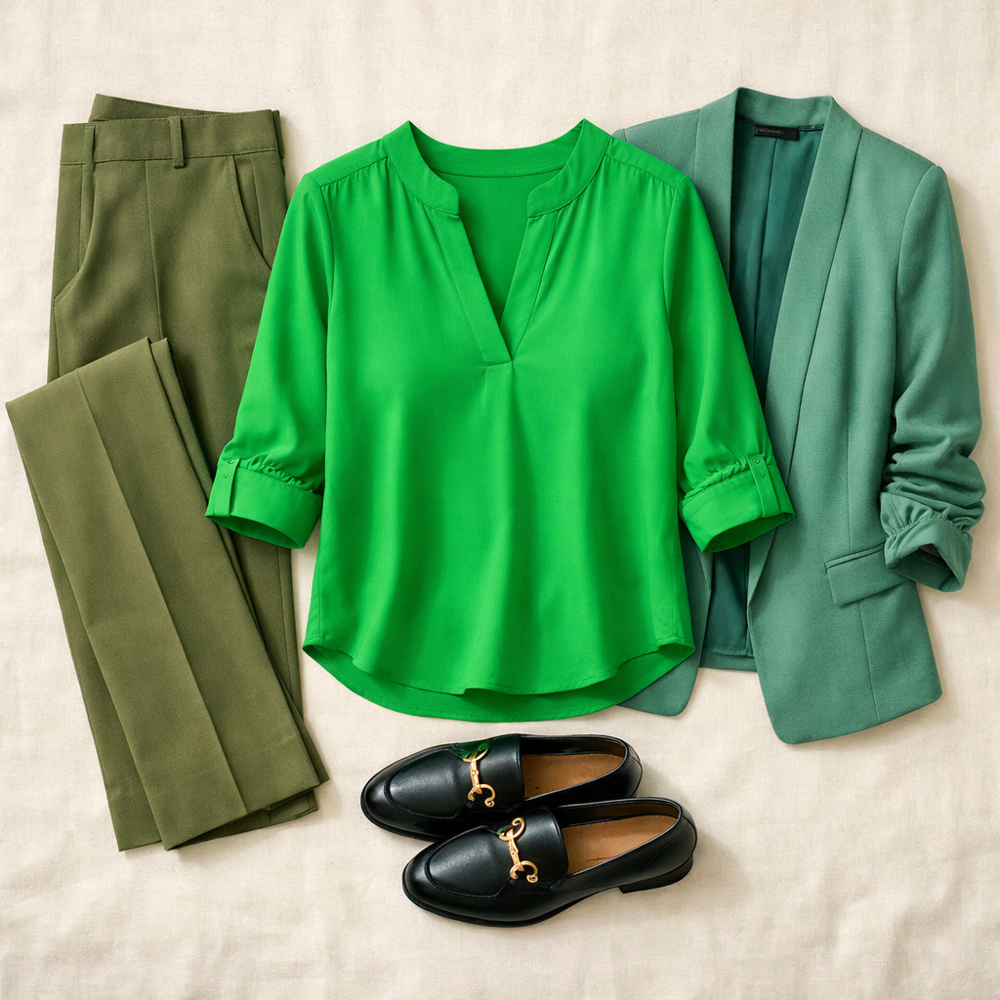
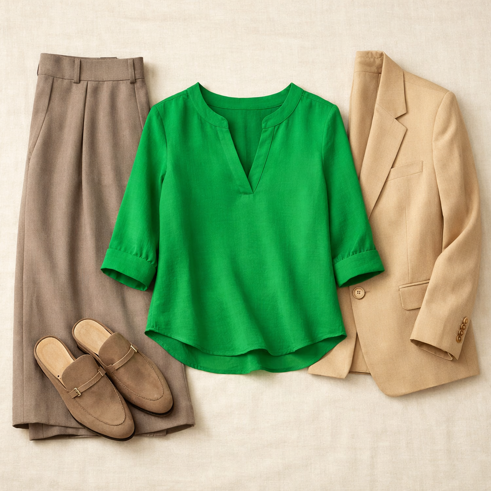
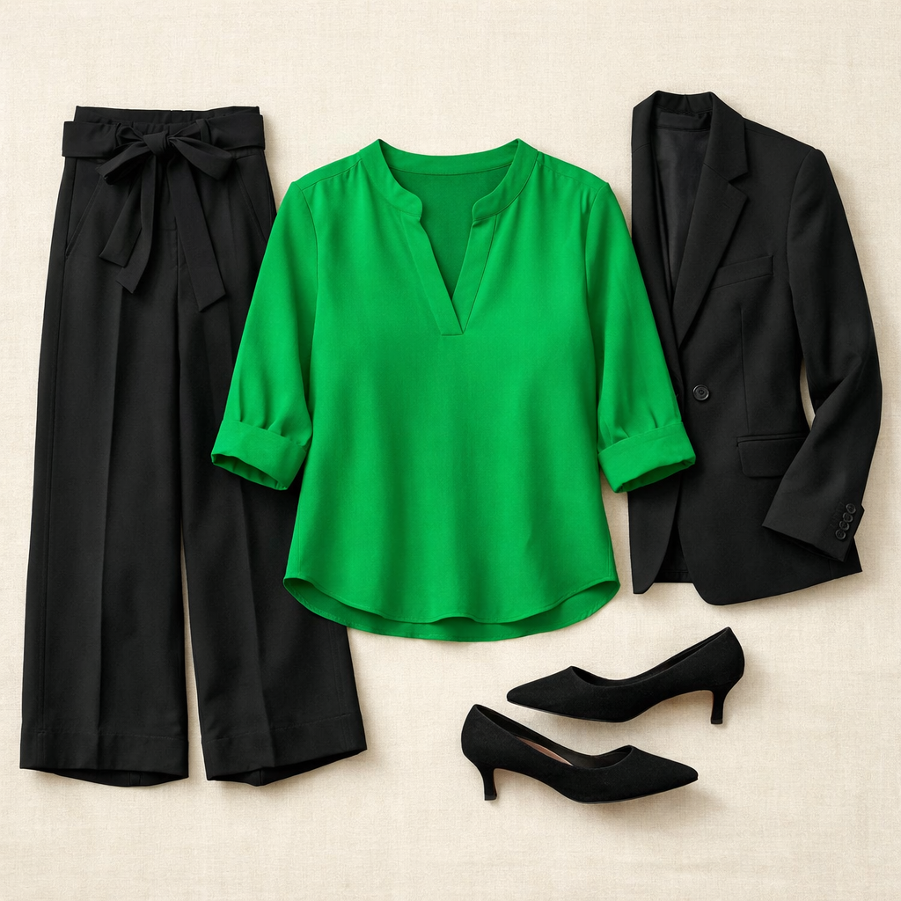

Split Neck Blouse — Vivid Green
A bold, saturated green blouse with a flattering split V-neckline and relaxed 3/4 sleeves. The 100% polyester fabric is wrinkle-resistant and machine washable — perfect for a busy executive who doesn't have time for the dry cleaner. The vivid green is a statement color that energizes any neutral bottom.
Shop NowWhy This Pick
Your wardrobe is heavy on navy and black — this vivid green injects life into your work rotation without being loud. The split V-neck is open and flattering (no constriction around the neck), the 3/4 sleeves are office-appropriate for DFW spring and summer, and the relaxed body skims past the hip without clinging. At $59, it's a solid value for a piece that will pair with at least 6 different bottoms you already own. May want a nude or black cami underneath depending on how low the split sits.
3 Ways to Wear It
Styled with pieces already in your closet


